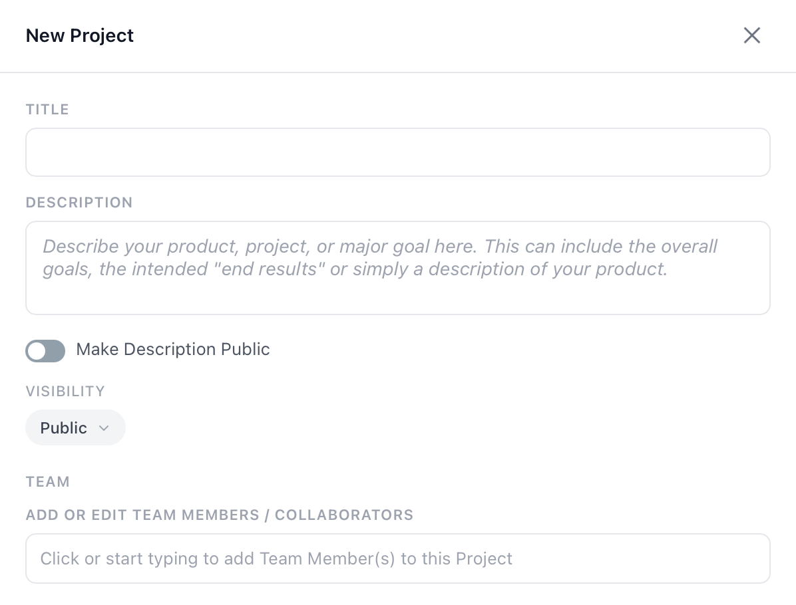

Creating Your First Project
Your project is the foundation of everything in PathPro. It's where your roadmap, feature voting, release notes, and community all live. Here's how to set one up.
Project Creation Flow
After signing up and logging into PathPro, you'll be taken to your dashboard. Click the "New Project" button to start the creation wizard. The process takes about two minutes and you can always adjust settings later.
The creation form walks you through the essentials: naming your project, choosing a URL slug, configuring visibility, and setting basic preferences.
Project Name, Slug & Subdomain
Every project has three identity elements:
- Project Name — The display name your team and community will see (e.g., "Acme SaaS").
- Slug — A URL-safe version of your name, auto-generated but editable (e.g.,
acme-saas). - Subdomain — Your project is immediately available at
acme-saas.app.pathpro.co. You can later connect a custom domain.
The slug is permanent once set, so choose carefully. It becomes part of every URL your community interacts with.
Visibility Settings
PathPro gives you control over who can see your project:
- Public — Anyone with the link can view your roadmap, feature voting page, and release notes. They need to register to vote or submit feedback.
- Private — Only invited team members and approved community members can access the project. Useful for internal tools or beta programs.
You can change visibility at any time from your project settings.
Basic Project Settings
During creation, you can also configure:
- Date format — Choose how dates appear throughout your project.
- Upvoting permissions — Control whether logged-out visitors can see vote counts or if voting requires registration.
- Submissions toggle — Enable or disable the community feedback button.
- Support tickets — Turn on the support ticket system if you want to handle customer issues directly in PathPro.

What Your Community Sees
Once you create your project, it's immediately live. Visitors to your subdomain will see:
- A clean project header with your project name and navigation tabs.
- Your roadmap (if you've added task groups and tasks).
- A feature voting page (once you add features).
- A "Submit Feedback" button (if enabled).
- A registration option so they can participate.